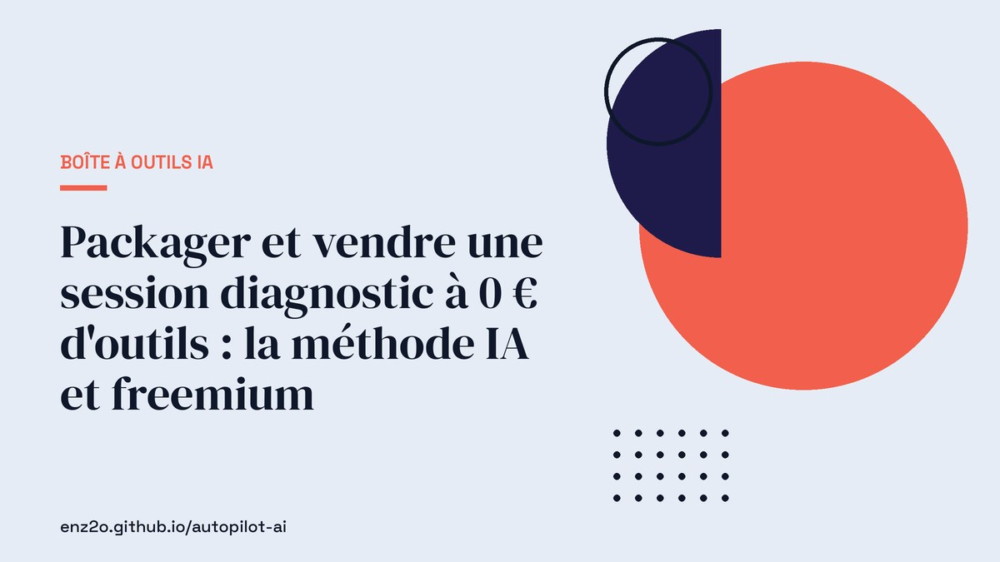

Packager et vendre une session diagnostic à 0 € d'outils : la méthode IA et freemium
2026-11-27
Article contenant des liens affiliés.

Combien de fois avez-vous accepté un « café virtuel » pour répondre à des questions sur votre métier, pour finalement réaliser au bout de quarante-cinq minutes que vous veniez de donner gratuitement une véritable consultation professionnelle ?
Pour un freelance, un étudiant avancé ou un créateur de contenu, donner de la valeur est indispensable. Cependant, offrir son expertise sans cadre ni contrepartie mène tout droit à l'épuisement. La solution intermédiaire entre le conseil gratuit et la mission longue à plusieurs milliers d'euros porte un nom : la session diagnostic express (ou audit flash).
En une heure d'échange cadré, vous apportez un regard extérieur pointu et repartez avec une rémunération directe ou un prospect ultra-qualifié. Mieux encore : vous n'avez pas besoin d'une suite de logiciels coûteux pour lancer cette offre dès cette semaine. Voici la méthode complète pour concevoir, automatiser et délivrer votre premier diagnostic à 0 € de budget technique.
1. Cadrer l'angle de votre diagnostic grâce à l'IA
Une erreur fréquente consiste à proposer une session généraliste du type « une heure pour me poser vos questions ». Ce positionnement flou n'attire personne. Votre session doit résoudre un problème précis, identifiable immédiatement par votre client idéal.
Exemples d'angles tranchés : * Développeur web : « Diagnostic performance et sécurité de votre site WordPress en 45 minutes ». * Rédacteur ou copywriter : « Audit express de votre page d'accueil pour doubler vos conversions ». * Designer freelance : « Diagnostic ergonomie et identité visuelle de votre application mobile ». * Étudiant ou formateur : « Bilan d'organisation d'études et mise en place de méthode de travail personnalisée ».
Pour trouver et affiner votre promesse, interrogez un modèle de langage gratuit (comme ChatGPT ou Claude) avec un prompt de cadrage :
« Agis comme un consultant en stratégie de services. Mon domaine d'expertise est [votre domaine] et mes clients cibles sont [votre audience]. Propose-moi 3 concepts de sessions diagnostic de 45 minutes qui répondent à une douleur urgente et urgente de cette cible. Pour chaque concept, donne un intitulé percutant, les 3 étapes de la session et le livrable promis. »
Ne prenez pas la réponse au pied de la lettre : choisissez l'axe sur lequel vous êtes le plus à l'aise pour apporter un retour d'expérience sincère et concret.
2. Construire la page de vente et le paiement sans frais fixes
Une fois l'offre définie, vous devez mettre en place une page claire permettant au client de comprendre le programme, de réserver sa place et de régler en ligne. Il est inutile de souscrire à trois abonnements différents (un pour le site, un pour la prise de rendez-vous, un pour la facturation).
C'est ici qu'une solution tout-en-un devient indispensable pour éliminer les frais fixes. En utilisant Systeme.io, vous pouvez héberger votre page de présentation, intégrer un bouton de paiement sécurisé (via Stripe ou PayPal) et automatiser la livraison des accès sans sortir votre carte bancaire grâce à leur formule gratuite.
Votre page doit comporter uniquement cinq blocs essentiels : 1. L'accroche : le problème précis que rencontre votre client et pourquoi il bloque. 2. La promesse : ce que le diagnostic va clarifier (le livrable ou plan d'action). 3. Le déroulé : ce qui se passe avant, pendant et après l'appel. 4. Votre légitimité : qui vous êtes et pourquoi vous maîtrisez ce sujet précis. 5. Le formulaire de commande : simple, direct et transparent sur le tarif.
En centralisant la page et la facturation au même endroit, vous gagnez du temps et évitez les frictions techniques qui découragent les acheteurs.
3. Automatiser le questionnaire préparatoire pour rentabiliser l'appel
Le piège numéro un d'un audit flash est de passer 30 minutes sur 45 à poser des questions basiques pour comprendre le contexte du client. Le jour de la session, vous devez déjà connaître ses enjeux pour entrer immédiatement dans l'analyse.
Configurez une règle d'automatisation : dès que le client valide son paiement dans Systeme.io, un e-mail automatique lui est envoyé avec un formulaire gratuit (via Google Forms ou Tally). Ce questionnaire préparatoire doit comporter au maximum cinq questions :
- Quel est l'objectif prioritaire de votre projet sur les 60 prochains jours ?
- Quel est le frein principal qui vous empêche d'atteindre ce résultat aujourd'hui ?
- Quelles actions ou solutions avez-vous déjà testées sans succès ?
- Quels documents, liens ou accès dois-je analyser avant notre session ?
- Quelle est la question exacte à laquelle vous voulez une réponse claire à la fin de notre échange ?
Grâce à ces réponses reçues 48 heures avant l'appel, vous préparez votre structure d'analyse en amont. Votre professionnalisme sera perçu comme irréprochable dès la première minute.
4. Préparer et synthétiser l'audit en temps record
La valeur d'un diagnostic réside dans votre capacité d'écoute et la clarté de vos recommandations. Pendant la session en visio, coupez toute distraction numérique et concentrez-vous à 100 % sur l'échange.
Pour maintenir une concentration maximale et éliminer les bruits parasites extérieurs lors de vos entretiens, l'utilisation d'un casque antibruit sans fil permet d'offrir une présence téléphonique irréprochable sans être distrait par l'environnement.
Prenez vos notes de manière structurée. Certains préfèrent un éditeur texte minimaliste, mais noter les points clés à la main sur un carnet de notes professionnel permet de maintenir un contact visuel plus naturel avec la caméra que de taper frénétiquement sur un clavier.
Une fois l'appel terminé, ne passez pas deux heures à rédiger un compte-rendu exhaustif de dix pages. Utilisez l'IA pour synthétiser vos notes brutes en un document actionnable :
- Collez vos notes prises à la volée dans votre outil d'IA.
- Demandez-lui : « Voici les notes brutes prises lors d'un audit avec mon client. Reformule ces points sous forme d'un mémo exécutif comprenant : 1) Le constat principal, 2) Les 3 blocages majeurs identifiés, 3) Le plan d'action prioritaire en 3 étapes concrètes à mener sur les 30 prochains jours. Conserve un ton professionnel, encourageant et concis. »
- Relisez, corrigez les nuances et envoyez ce PDF clair à votre client dans les 24 heures.
5. L'après-session : transformer un audit en relation durable
La session diagnostic est une excellente offre autonome, mais elle constitue également la meilleure porte d'entrée vers des prestations plus engageantes. Si votre travail a été rigoureux, votre client aura naturellement envie d'aller plus loin.
Trois jours après la remise du document de synthèse, prévoyez un e-mail de suivi automatique : * Prenez des nouvelles de la mise en place de la première action recommandée. * Proposez-lui deux options : soit il continue en autonomie avec la feuille de route remise, soit vous prenez en charge l'exécution complète ou l'accompagnement régulier via un devis dédié.
En utilisant les fonctionnalités d'e-mailing et de tags de contact de Systeme.io, vous pouvez segmenter facilement ces clients ayant déjà acheté chez vous pour leur partager ponctuellement des ressources exclusives ou leur proposer de nouveaux services adaptés à leur profil.
Passez à l'action dès aujourd'hui
Créer une offre de diagnostic express ne demande ni des semaines de développement, ni un investissement de départ. C'est le format idéal pour tester l'appétence du marché pour votre expertise tout en étant rémunéré pour votre temps dès le premier client.
Prenez une feuille, définissez un angle précis répondant à un problème douloureux, branchez votre page de réservation et diffusez votre proposition à votre réseau. Vous pourriez être surpris de la rapidité avec laquelle un simple audit bien calibré peut transformer votre activité indépendante.